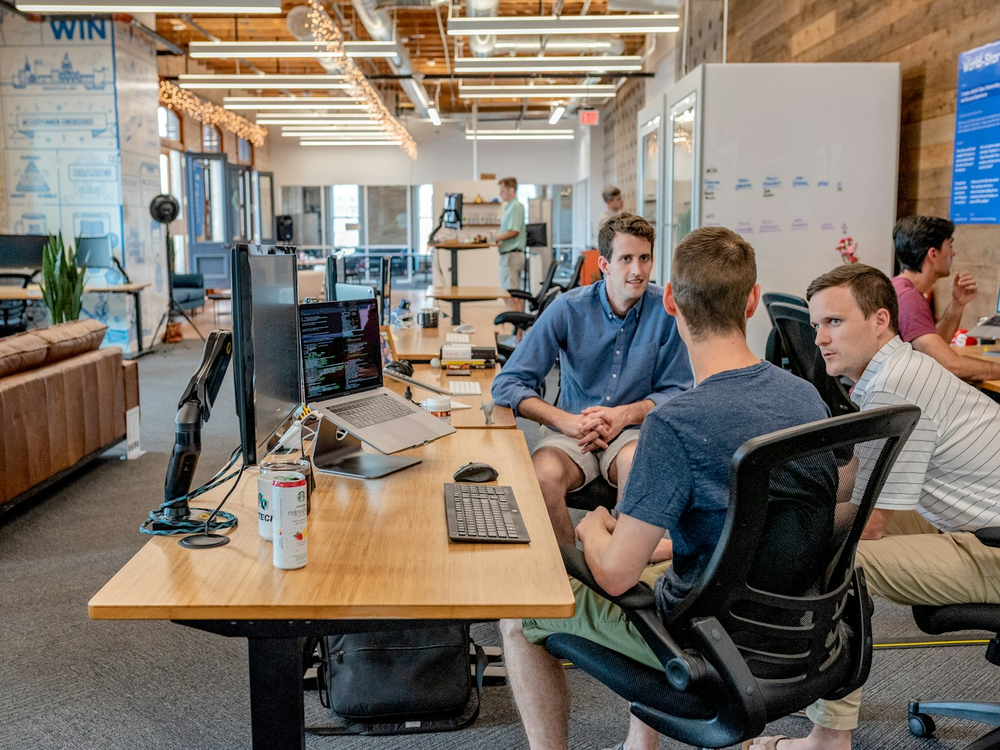
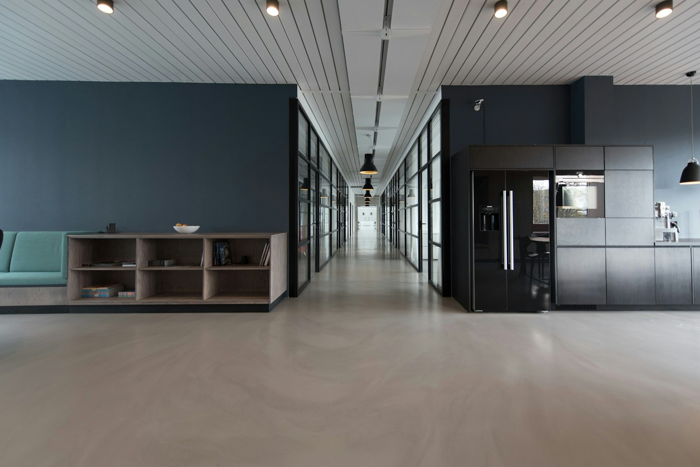

Upload team documents, search by meaning, and ask questions with responses linked to the material they reference.

The application separates employee and administrator workspaces and uses authenticated sessions. Review the deployment and storage configuration to confirm it meets your organization's security requirements.
Separate workspace roles
Employee and administrator areas provide different tools for working with personal and enterprise documents.
Password-based sign-in
Passwords are hashed before storage, and signed tokens are used for authenticated requests.
Personal document space
Personal files and conversations are kept in the user's workspace rather than shared with other employees.
Authenticated requests
The application uses token-based authentication for signed-in sessions.
Protected application routes require an authenticated session.
Personal document libraries are scoped to their owner.
Review the documents used to prepare a response.
Configure credentials and storage for your environment.
Search uses document embeddings to find passages related to a question, even when the wording differs. Retrieved passages are then used to provide context for the answer.
Document embeddings are stored in a persistent Chroma collection for retrieval.
Upload supported documents to have their text split into passages, embedded, and indexed.
An optional Cohere reranker can refine retrieval results; a local lexical fallback is available without it.

The assistant combines a question with passages retrieved from your documents and includes source references, so your team can check the original material.
Every answer includes the exact document and page number it was derived from.
Responses use retrieved passages as context; verify important details against the cited source.
Multi-turn conversations with full context window for continuous, coherent dialogues.
Ask questions about the material in your workspace and review the related source references.
ENTRAG can be up and running on your infrastructure in under 30 minutes. Our team handles the hard parts.